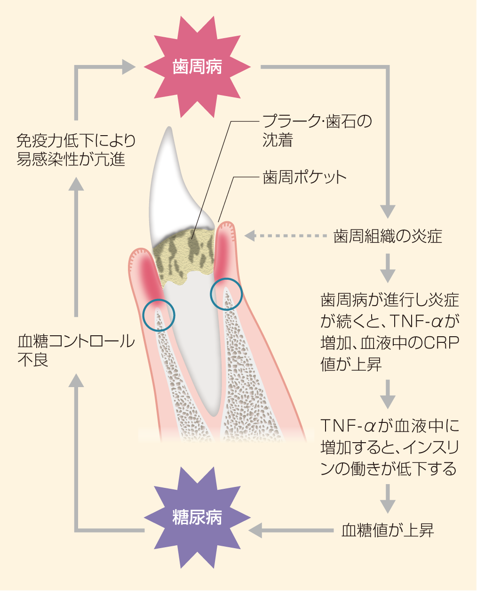

DM Trend Journal 33号
CLINICAL TALK

医療法人社団厚誠会
理事長
有馬 嗣雄先生
医療法人社団STOP DM
すずき糖尿病内科クリニック
院長
鈴木 大輔先生
医療法人社団厚誠会
理事長
有馬 嗣雄先生
医療法人社団STOP DM
すずき糖尿病内科クリニック
院長
鈴木 大輔先生
鈴木 歯周病は、以前から糖尿病の第6の合併症として欧米の研究報告等で指摘されてきました。わが国では日本糖尿病学会2008-2009年版『糖尿病ガイド』の「糖尿病合併症とその対策」の項目に、合併症の一つとして「歯周病」の解説記述が登場してから、流れが大きく変わってきました。
有馬 日本糖尿病協会と日本歯周病学会が、2007年に共同作成した歯科医師向けの『歯周病マニュアル』では、「随時血糖値が200mg/dL以上の時は、観血的処置は避けること」「歯科医院の診察室には、血糖自己測定器を備えておくことが望ましい」と明記されています。
鈴木 しかし残念ながら、足病変や網膜症などに比べ、歯周病は今もなお認知が低く、医科 - 歯科連携の進捗もはかばかしくないのが現状です。
有馬 問題は、医科 - 歯科間では、用語一つとっても、統一された共通言語を持ち合わせていないことです。さらに口腔管理する立場としては、踏み込んだ糖尿病理解の必要性を認識していなかったことと、もともと歯科は命に直結した医療ではないという誤った考え方が土台にあります。その傾向は今も続いており、糖尿病専門医との連携の重要性を認識せず、接触さえしていない歯科医が多いのです。
鈴木 歯周病と糖尿病の関係について、簡単にレクチャーいただけますか。
有馬 一般的には、歯周病になると、マクロファージという炎症細胞が刺激されサイトカインが分泌されます。とくにTNF-αというサイトカインが血液中に増加すると、インスリンの働きが低下し、血糖値が上がって糖尿病のコントロールもできにくくなり、歯周病も進行するという悪循環が考えられています(図1)。
鈴木 しなるほど、糖尿病と歯周病はたがいに負のスパイラルを形成しつつあるということですね。歯周病が重症であるほど血糖コントロールが不良になる。そのため、歯周病を治療すれば、血糖値が改善する可能性があるわけですね。
有馬 問題は、医科 - 歯科間では、用語一つとっても、統一された共通言語を持ち合わせていないことです。さらに口腔管理する立場としては、踏み込んだ糖尿病理解の必要性を認識していなかったことと、もともと歯科は命に直結した医療ではないという誤った考え方が土台にあります。その傾向は今も続いており、糖尿病専門医との連携の重要性を認識せず、接触さえしていない歯科医が多いのです。
図1：歯周病と糖尿病との関係
図2:歯の喪失原因

公益財団法人8020推進財団「永久歯の抜歯原因調査報告書」2005年より
有馬 だからといって、高感度CRPに反応する程度の軽微な慢性炎症が、シックデイのようにどの程度血糖コントロールに影響を与えるかは疑問です。むしろ、歯周病と糖尿病との関係は、生活習慣をベースとした環境因子がその発症や病態に、それぞれ関与しあう疾患と考えたほうがよいと思います。歯周病は、そのように軽微な炎症が見受けられるものの、う歯のように痛みもないため、気づきにくい疾患です。しかし、歯周病の悪化による歯の動揺や喪失が糖尿病悪化を助長する食生活を招き、病態にも悪影響を及ぼします。
一般的な歯の喪失原因をみても、歯周病が42%と一番多くなっています(図2)。また、高齢患者では、噛む機能の低下をまねく歯牙欠損や義歯装着が多くみられ、それが、糖尿病治療の大きな柱である食事療法に対する障壁となる可能性が着目されています。
鈴木 それらを踏まえて、当院では2013年から1ヵ月に1〜2回、有馬先生にお願いし、糖尿病患者に無料歯科検診を実施してもらうようになりました。これが連携の始まりです。
有馬 歯科医師と歯科衛生士各1名が出張し、問診、簡易歯周病検査キットであるヘモグロビンキットによる歯周病の発症検査、視診による残存歯数、カリエスの有無、歯周病の進行度検査(CPI)を行いました。
鈴木 検診の際には歯科用ユニットがなくても、当院の診察用椅子で十分でした(図3)。腰掛けた患者さんに、歯科衛生士が口腔内をペンライトで照らしながらの検診でしたが、改めて歯科を訪れなくてもいい気軽さから、歯科受診は小学校以来だとか、30年ぶりといった患者さんもいて、心理的な抵抗感がなかったという利点があります。検診結果は60名中約9割と高率に「歯周病の疑いあり」が出て、連携の必要性と有用性をあらためて実感しました。歯科診察後は、必要に応じて歯科相談、ブラッシング指導も受けられ、同時に歯科受診の予約もできるようにしています。
有馬 その一方、通院中の当院の歯科患者に対しても、すずき糖尿病内科クリニックのCDEである看護師や管理栄養士による定期的な出張、問診を実施していただき、血圧測定、血液検査等をし、そのデータをもとに、希望者には健康相談や、食生活をはじめとする生活習慣の指導をしていただくことを通して、スムーズな連携ができるようになりました。
双方向の検診のほかに、年1回のペースで啓発活動の一環として、当院の歯科患者向け講演会を開催し、鈴木先生に講師をお願いしています。講演後に、歯科衛生士による歯科検診とともに看護師、管理栄養士の協力により、血圧や血糖の測定、無料健康相談なども実施しています(図4)。
患者さんの中には、糖尿病治療薬を処方されていても、血糖コントロールが不良の人、歯周病が糖尿病合併症の一つであるという認識がなかった患者さんも多く、大変好評です。
もともとこの講演会は連携の始まる数年前から、糖尿病について私たち歯科医や歯科衛生士の知識不足を補うため、鈴木先生にお願いしていました。当初は、病態の理解だけでも難しく、ついていくのがやっとでしたが、最近は勉強の成果もあってか、当院スタッフもかなり突っ込んだ質問ができるようになりました。
鈴木 やはり基本的なことでも積み重ねが大切ですね。最近は皆さんの知識量が増え、この患者さんはインスリンを導入したほうがよいのではという申し出もあるほどで、講演を続けてきた甲斐があったという実感をもっています。
双方向の交流によって、当院のCDEたちが歯科の正しい知識を習得できたことで、日常の療養指導に活かせるようになったことだけでも、有意義だと思ます。
鈴木先生よりご提供

鈴木先生よりご提供
 鈴木 糖尿病の医療スタッフ側は、患者さんの歯周病改善にどんな指導をしたらよいのでしょうか。
鈴木 糖尿病の医療スタッフ側は、患者さんの歯周病改善にどんな指導をしたらよいのでしょうか。
有馬 歯周病は、軽度と中度の歯周炎、重度の歯周炎に分類されます。歯肉に発赤が認められた軽度の歯周病例では、4週間の患者さん自身によるブラッシングだけで改善しました(図5)。
歯周病は食後に放置してできた細菌の塊(プラーク)が出す毒素によって進展しますが、とくに夜間は唾液量が少なくなるため歯周病リスクが高くなります。ですから、第一段階としては、日中はともかく夜の食事後に、とにかく丁寧にブラッシングをすることが重要なのです。
鈴木 歯周病の改善や予防のために丁寧なブラッシングをすると、その後、しばらくは、つい一口などという間食はしたくなくなるという心理的な利点もあり、糖尿病の進展抑制や予防に大いに貢献することになるのではと思うのです。ブラッシング後の爽快感から、少なくとも、だらだら食いを阻止できる習慣につながるものとおすすめできます。
有馬 食後のブラッシング習慣は、食生活のリズムを整える上でも大切で、間食の摂取を抑制する効果があるといえます。歯周病予防のためと考えられがちなブラッシングは、食生活の改善、糖尿病予防にもつながるのではと考えています。
指導時は、定期的な歯科への来院機会を増やすための啓発機会としてほしいですね。
指導時のチェックポイントとしては、問診では、「歯磨きのときに歯茎からの出血はありませんか」「口臭がすると言われたことはないですか」「ぐらぐらしている歯はないですか」「硬いものが噛みにくくなっていませんか」などと聞くことが必要です。
視診では、歯周ポケットからの出血の有無、歯の動揺の有無や発赤、腫れ、退縮の有無、それに歯周病独特の口臭の確認も必要となります。
鈴木 定期的な受診の継続が何よりも大切という点は、糖尿病も同じですね。
CDEは、歯周病が悪化して歯を失うリスクが高まると、咀嚼機能が低下し、口からの食事に支障をきたし、血糖コントロールに悪影響を及ぼすことを患者さんに丁寧に説明して、定期的な受診につなげていきたいですね。
そして、スタッフ自身が患者さんの歯、歯茎、口臭等のチェックを心がけることが大切ですね。日本糖尿病協会編の『糖尿病連携手帳』には、「かかりつけ歯科医」欄があることにも気づいてほしいものです。
図5:丁寧なブラッシングだけでも、十分、歯肉が引き締まる例
軽度歯周炎

歯肉の発赤・腫脹、歯肉出血、歯石沈着
歯周病は早期発見・早期治療が原則

症状は改善され、引き締まった歯肉へ
有馬先生よりご提供
有馬 両科の医師、スタッフとも、糖尿病の合併症の重大さに関心を持ち続けることが必要でしょう。また、糖尿病も歯周病も高頻度に発症する慢性疾患であるため、痛み等のトラブルが発生する前に歯科受診することの重要性を強調しておきたいですね。
鈴木 歯糖尿病の治療の中で、薬物療法、栄養療法とともに、継続的な口腔ケアを療養指導として位置づけるためにも連携は必要で、医療が患者さんの生活に近づくよい機会になればと願っています。
有馬 いうまでもなく、患者さんが連携の中心であることが基本です。そのためには、あらゆる機会をとらえて、糖尿病、歯周病への知識を深めることが必要です。医科 - 歯科の良好なネットワークづくりのために、顔を合わせた相互のディスカッション機会をこれからも積み重ねていきたいと思います。
これまでの医科が“いのちの医療提供”をめざしてきた一方、歯科では“QOLの医療提供”をめざしてきました。幸運なことに、この連携が、医科 - 歯科のめざした医療を発展させ“生活の中の医療”として位置づけられる絶好の機会となるのではと思います。
鈴木 今後は、日本糖尿病療養指導士認定機構も推進しつつあるように、CDEには、他職種におよぶ横のつながりを強化していく役割が求められていくでしょう。糖尿病療養指導の専門家として、歯科衛生士を含めたスタッフの皆さんの指導的役割を担ってほしいと期待しています。
CDEのためのディスカッション・ポイント
❶歯周病が糖尿病に及ぼす影響についての知識が、不足していないだろうか。
❷医科・歯科連携の実現に向かい、どう動いたらうまくいくのだろうか。
❸歯周病の疑いがある糖尿病患者さんには、どうアプローチすべきだろうか
DM Trend Journal 33号
歯科との連携糖尿病患者の口腔ケアには歯科との連携が必須
Q&A あなたならどうする？CDEとして、糖尿病患者さんに口腔ケアの必要性を伝えるには、どんなポイントがあげられますか?
CDE room坂本則子さん (2000年CDE資格取得)
チーム力あり！ リーディングホスピタル内科と歯科の連携を深め糖尿病と歯周病の悪循環を絶つ
CDE Trendviewプレゼンテーションスキル講座(下)
Lilly Diabetes 第15回高齢糖尿病患者への新たな視点
CDEのための学会レポート「第57回 日本老年医学会学術集会」レポート
Backnumber

第39号

第37号

第36号
第33号

第32号

第31号